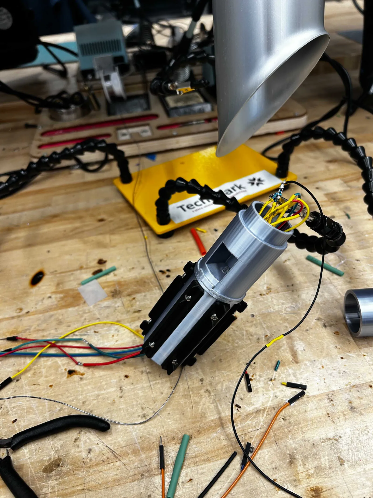
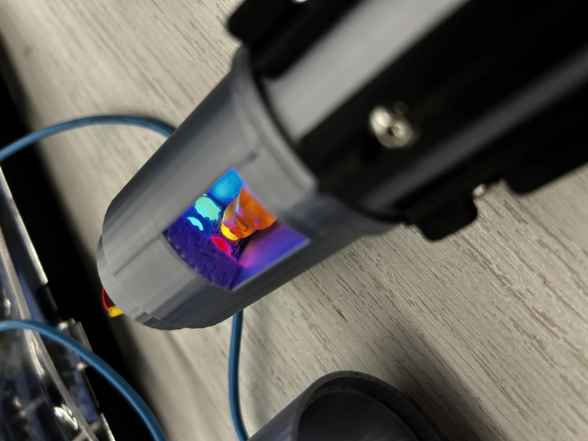
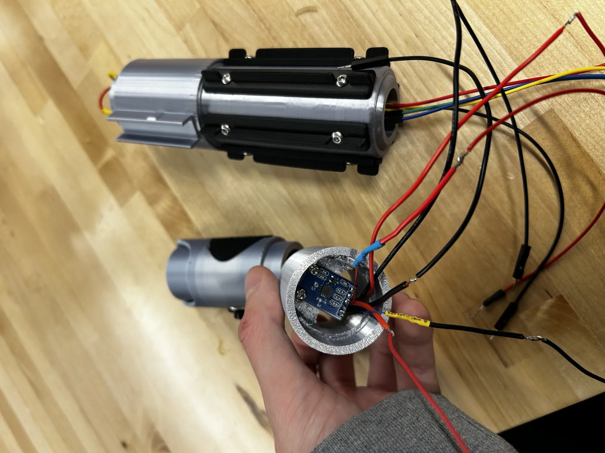
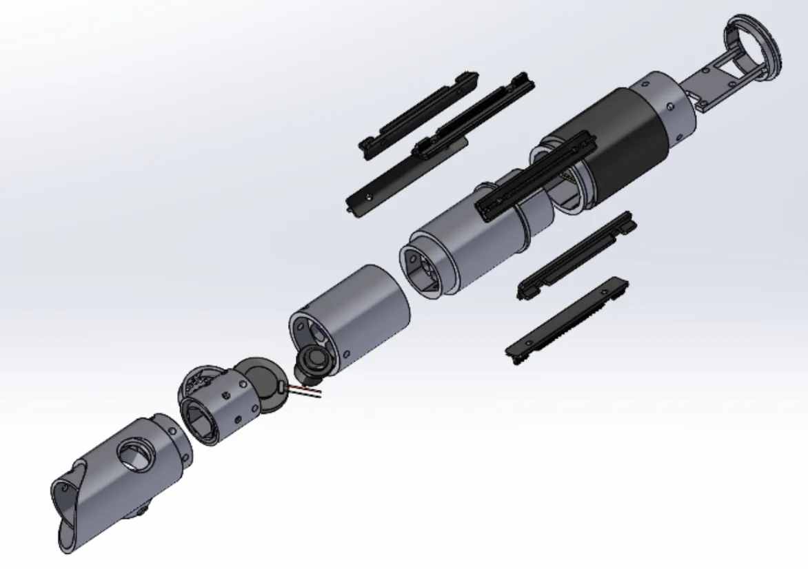
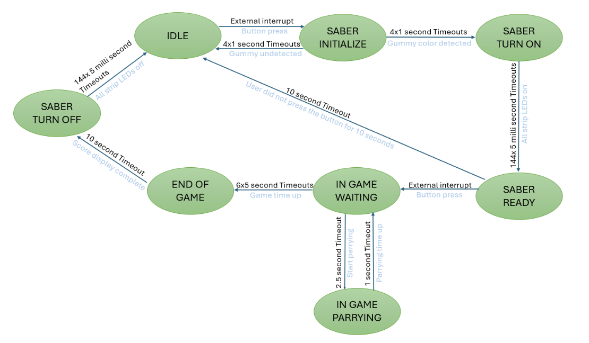
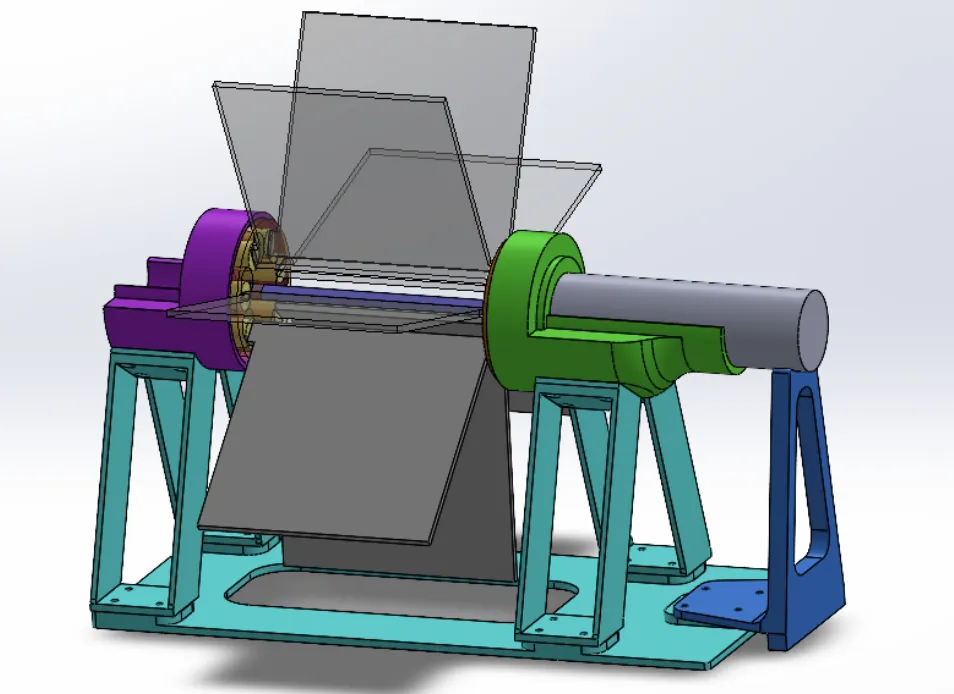
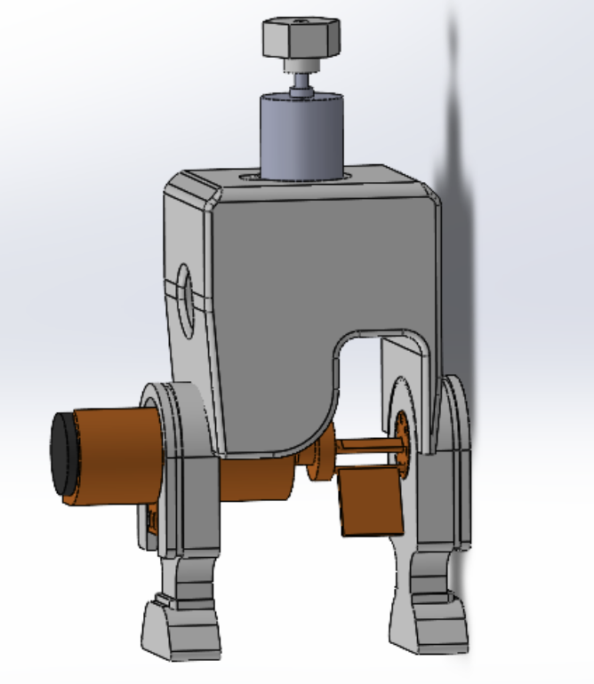

Explanation Video


Overview
An all-inclusive, immersive Star Wars project that takes users from building the lightsaber, choosing a crystal, to duel practice against Darth Vader. Built with dual STM32F446ZE Nucleo boards, featuring RGB LED blade (288 LEDs), custom gummy bear color detector, motion-based gameplay with IMU, synchronized audio, haptic feedback, and mechanical flipboard displays, all implemented from scratch without any libraries.
Team: Atharva Ramdas, David Seong, Korell Adikpeto, Pubordee Aussavavirojekul, Vrishabh Kenkre
Course: Advanced Mechatronic Design 16-878, Carnegie Mellon University
Custom Kyber Crystal Color Detector
Custom color detection system using LEDs and a phototransistor to identify gummy bear colors (red, blue, green, yellow). The lightsaber blade color is set based on the detected crystal. All algorithms implemented from scratch without libraries.


Motion Sensing & Haptic Feedback
MPU6050 IMU detects lightsaber movements for swing detection during gameplay. Vibration motors provide haptic feedback synchronized with sound effects. All sensor fusion and motion processing implemented from scratch.
RGB LED Blade & Hardware Integration
Two parallel WS2812B Neopixel LED strips (288 LEDs total) with custom PWM + DMA control at 800 kHz. Modular 3D printed hilt houses all electronics. 48-inch polycarbonate blade diffuser for even light distribution.


Gameplay & State Machine
8-state machine controls the experience: IDLE → SABER_INITIALIZE (color detection) → SABER_TURN_ON → SABER_READY → IN_GAME_WAITING → IN_GAME_PARRYING → END_OF_GAME → SABER_TURN_OFF. Game features 6 rounds of 5 seconds each with directional parrying cues.
Dual Nucleo Architecture & Flipboard Display
Two STM32F446ZE Nucleo boards communicate via GPIO interrupts. Primary Nucleo handles lightsaber (state machine, LEDs, audio, IMU, swing detection, color detection, vibration). Secondary Nucleo controls flipboard displays (directional cues and timer dial) with PID position control.


Technical Constraints
Built entirely from scratch: no libraries, no batteries (tethered), STM32F446ZE only. Custom drivers for I²C, DMA, PWM, ADC, GPIO, timers. Register-level manipulation for all peripherals. Budget: ~$135 excluding filaments.
Similar work

E-Ducati-On
Educational two wheeled robotics platform designed to test control systems. It's a Ducati inspired robot that is capable of self balancing, driving and performing stunts.
Hydrone
Underwater drone project built during CMU's Build 18 competition for recreational, environmental, and safety applications.

Laika
Laika is a quadruped robot like SPOT that is being built from scratch as part of Roboclub.